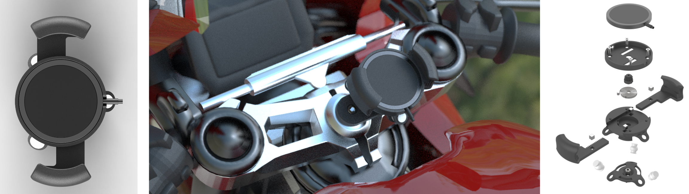
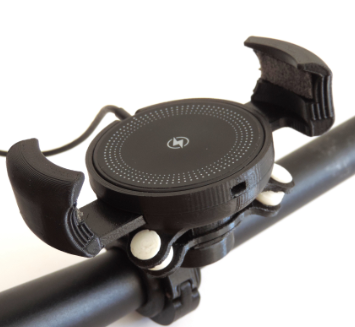

Mag n' Snap
Stand-alone mobile phone mounting system on motorbikes with vibration damper and wireless charging with MagSafe magnetic alignment. Fully functional motorbike accessory made in several copies. The product went through a long and extensive study and prototyping phase to understand the performance achieved in terms of vibration damping and the needs of users. Compared to the competitors, it boasts all the premium features in one compact body without requiring the user to fit a proprietary cover on his phone. Operation requires only one hand: simply pull one of the two clamps outwards (they will automatically lock in the open position), align the mobile phone thanks to the MagSafe magnets, and then snap the clamps into the closed position with a slight inward pressure: the mobile phone is thus secured, aligned for wireless charging, and protected from damaging motor vibrations thanks to the integrated vibration damper.
Study and results about vibrations


It was decided to individually study specific engine rotation speeds in order to simplify and have a clean reading, unaffected by any resonances given by the increase or decrease in revolutions. These RPMs are dictated by Apple's guidance (and common sense) that damage occurs especially with prolonged exposure to certain vibrations. It was decided to examine engine rmps that are often kept fixed, or almost fixed, while driving, such as:
- Idle speed, often maintained in city driving at traffic lights or in traffic and in any case easy to record as a base speed
- Quiet' driving speed, often maintained in urban contexts and secondary roads Motorway regime, maintained during long transfers for several hours in sixth gear Enthusiastic driving speed, higher than motorway speed, when fully utilising the gears between corners to maintain high torque from the engine.